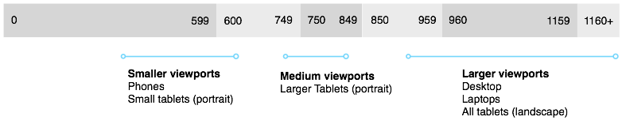
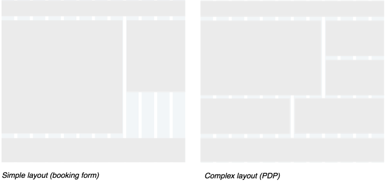

Layout
Breakpoints
Existing breakpoints with typical viewport ranges. Focus design efforts around these ranges.
Page layout
When laying out components on the page use a 12-column grid with percentage based columns and fixed width margins and gutters. This provides flexibility to create many different layouts and page types.
Smaller viewports
Default margins and gutters set to 8px, use multipes of 4px if design requires something different.
Medium to Large viewports
Default margins and gutters set to 16px, use multipes of 8px if design requires something different.

Grid proportions
Use the grid when laying out components and use proportions that best suit the content and required heirarchy.Typical grid proportions on HCOM

Example layouts
Content and element structure
Content and functional elements that sit with in a component do not need to sit on a grid.
Use mutiples of 4px for padding, margins etc when laying out content and fuctional elements inside components
Below is an example of how this might apply to an existing component. Spacing and positioning are used to help create visual relationships between information types.